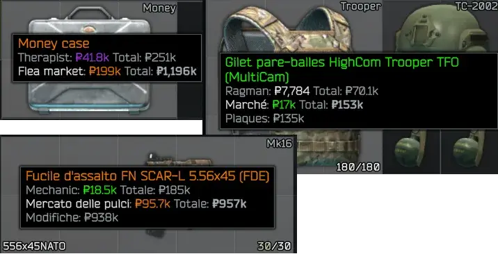
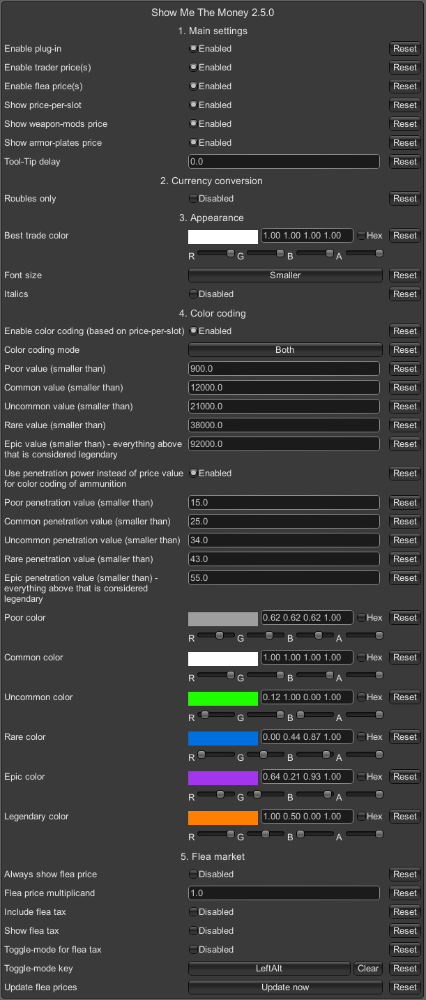

Show Me The Money (Item Pricing)
- Downloads
- 116,805
- Favourites
- 174
- Mod lists
- 322
A quick update regarding SPT 4.1: I’ve had a lot going on personally lately, so I haven’t been able to dedicate much time to modding. However, I still plan to update my mod(s) for SPT 4.1. I can’t promise a Day One update, but I’ll do my best to get it out to you all as soon as possible after the launch.

Speed up your sales!
A remarkably convenient quick-sell add-on lurks in the Addon tab, waiting patiently for you to notice it. If patience is not your strong suit, you may bend spacetime and simply click here.
As many of you have seen in the recent announcements from the SPT developers on Discord about the changes with THE CITY 1.0, the long-term outlook for SPT and FIKA is uncertain. If you haven’t read their message yet, you can find it here:
https://discord.com/channels/875684761291599922/875706629260197908/1439239841895158022
FIKA will no longer be adding major new features, focusing instead on support and bug fixes for as long as SPT remains viable.
For my mod, I’ll be taking a similar approach: I’ll continue providing maintenance updates and fixing bugs, but I don’t currently plan to develop new large-scale features. The project has grown far beyond what I expected when I started it, and it has genuinely been great to read your feedback and turn it into improvements. Thank you for every comment and conversation on Discord.
The mod’s source code is available on GitHub, so if anyone wants to fork it and build new features on top of it, feel free - you have my blessing.
What does it do?
Imagine examining an item in THE CITY and having the game whisper gently into your ear:
“Here’s exactly how much money this thing is worth, who will buy it, and whether selling it is a brilliant idea or a catastrophic financial farce.”
That’s what SMTM does. It modifies the in-game tooltip to reveal:
- The trader who will pay you the most (because some traders appreciate your junk more than others)
- The flea market price required to achieve a 100% chance of sale
- Both price per slot and total price, helpfully highlighted so you don’t have to do arithmetic
- Optional inclusion of flea market taxes, for those who enjoy pain
Version 1.5.0+ adds color-coding based on the World of Warcraft rarity scheme - from poor (grey, sad, mildly apologetic) to legendary (orange, smug, expensive).
The server-side portion of the mod exposes an endpoint that politely hands the client mod the relevant backend configuration and flea prices.
Everything is configured through the BepInEx Configurator.
And yes, the mod is designed to whisper requests to the SPT server, not shout them.
Requirements
Practically none. If you can run SPT, you can run this.
If you use the FIKA headless client:
Splendid news: Do not install anything there. Seriously, don’t. It will only cause complications, headaches, and possibly the rising of ancient eldritch forces. Add this mod to your Exclusions.json if you use Corter’s Mod Sync.
Configuration
Access the BepInEx Configurator (usually via F12 or F1) and behold:

Here you can also summon fresh flea market prices from the server. This is particularly handy if you’re using SPT-LiveFleaPrices, which updates prices regularly but not telepathically.
Just to be clear: Triggering this does not cause LiveFleaPrices itself to contact the celestial flea-market-gods. It simply fetches whatever your SPT server already knows.
Remarks
- Changes to trader price markups (e.g., via SVM) are automatically accounted for.
- Multiple languages are supported, but if something looks as if it was spat out by a malfunctioning Babel Fish, leave a comment. Disabling color-coding may help.
Known compatibility
- SPT-LiveFleaPrices ≥ v2.0.1 (DrakiaXYZ)
- UIFixes ≥ v5.0.5 (Tyfon)
- ODT’s Item Info ≥ v2.0.2 (kobethuy)
- Note: ODT’s Item Info has Opinions™ about how color-coding should work. It may overwrite item-name color, but price colors remain intact.
- All Quests Checkmarks ≥ v1.3.1 (ZGFueDkx)
- MoreCheckmarks ≥ v2.0.0 (VIPkiller17)
Planned features/changes
- … (imagine a gentle, wistful sigh here)
Known problems
- A friend of mine occasionally experiences a stuck tooltip when using the flea-tax toggle. I have investigated this thoroughly and discovered that… I still have no idea why it happens.
- Some weapons feature suffixes like “Carbine.” These sometimes refuse to participate in color-coding. Possibly out of spite.
Problems that may occur
- Traders added by other mods may or may not play nicely with the price system.
- The flea-tax toggle exists to maintain peace between tooltip-altering mods. If something goes wrong, let me know.
Installation
If your SPT installation is normal (i.e. not a baroque cathedral of symbolic links and misplaced folders):
- Extract the contents of the
.zipor.7zstraight into your SPT directory. - When you’re done, you should see:
- C:\yourSPTfolder\BepInEx\plugins\com.swiftxp.spt.showmethemoney\SwiftXP.SPT.ShowMeTheMoney.Client.dll
- C:\yourSPTfolder\SPT\user\mods\com.swiftxp.spt.showmethemoney\SwiftXP.SPT.ShowMeTheMoney.Server.dll
If your client and server are separated like two star-crossed lovers:
Extract the BepInEx folder into the client.
Extract the user folder into the server.
Client:
- C:\yourSPTclient\BepInEx\plugins\com.swiftxp.spt.showmethemoney\SwiftXP.SPT.ShowMeTheMoney.Client.dll
Server:
- C:\yourSPTserver\SPT\user\mods\com.swiftxp.spt.showmethemoney\SwiftXP.SPT.ShowMeTheMoney.Server.dll
Installation
If your SPT installation is normal (i.e. not a baroque cathedral of symbolic links and misplaced folders):
- Extract the contents of the
.zipor.7zstraight into your SPT directory. - When you’re done, you should see:
- C:\yourSPTfolder\BepInEx\plugins\SwiftXP.ShowMeTheMoney.dll
- C:\yourSPTfolder\user\mods\swiftxp-showmethemoney\package.json
- C:\yourSPTfolder\user\mods\swiftxp-showmethemoney\src\mod.ts
- C:\yourSPTfolder\user\mods\swiftxp-showmethemoney\src\models\partialRagfairConfig.ts
- C:\yourSPTfolder\user\mods\swiftxp-showmethemoney\src\services\fleaPricesService.ts
- C:\yourSPTfolder\user\mods\swiftxp-showmethemoney\src\services\ragfairConfigService.ts
If your client and server are separated like two star-crossed lovers:
Extract the BepInEx folder into the client.
Extract the user folder into the server.
Client:
- C:\yourSPTclient\BepInEx\plugins\SwiftXP.ShowMeTheMoney.dll
Server:
- C:\yourSPTserver\user\mods\swiftxp-showmethemoney\package.json
- C:\yourSPTserver\user\mods\swiftxp-showmethemoney\src\mod.ts
- C:\yourSPTfolder\user\mods\swiftxp-showmethemoney\src\models\partialRagfairConfig.ts
- C:\yourSPTfolder\user\mods\swiftxp-showmethemoney\src\services\fleaPricesService.ts
- C:\yourSPTfolder\user\mods\swiftxp-showmethemoney\src\services\ragfairConfigService.ts
(Last updated Feb 02, 2026 — SMTM v2.7.0)
-
How do I install SMTM?
- Extract the folders into your SPT directory. If that sounds too simple, consult the installation section(s).
-
How do I configure SMTM?
- Press F12 or F1. A configuration window will appear, as if summoned from a parallel dimension.
-
Is there a quick-sell addon?
- Yes! It has its own tab. It is quite proud of this.
-
No price information appears. What now?
- Check your installation. Reinstall if confused. Also, please don’t use WinRAR to extract
.7zfiles. It sometimes mangles them like a clumsy Vogon.
- Check your installation. Reinstall if confused. Also, please don’t use WinRAR to extract
-
No flea market prices?
- You must unlock the flea market unless you enable “Always show flea market price.” If prices are missing entirely, the server component is probably not installed correctly.
-
I get SSL errors. Help?
- Unlikely to be SMTM’s fault. SSL in THE CITY behaves like a paranoid toaster. Seek help on the SPT Discord.
-
What does the
(+)in the tooltip mean?- This indicates that the displayed flea market price includes all attachments/mods. If the sign is missing, the price refers only to the base item.
-
Why do flea prices differ from the average?
- Because:
- SMTM shows the 100% sell-chance price, not the average.
- It updates flea data every 5 minutes to avoid server overload.
- Live Flea Prices may cause sudden market lurches.
- The flea market is fundamentally chaotic, briefly capable of holding an opinion, and possibly drunk.
- Because:
-
Displayed flea prices seem wildly wrong. Why?
- Check your settings (SPT, SVM, SMTM, etc.). If still wrong, report details: item, expected vs shown price, screenshots, logs, the alignment of Jupiter, etc.
-
Armor plates don’t affect flea price. Why?
- Because SPT 4.0.4 also ignores plate value in its sell-chance logic. SMTM 2.5.0 can display plate value separately. SPT 4.0.5 may fix this.
-
Key remaining-uses don’t affect the price. Why?
- SPT 4.0.4 bug. A 1/40 key and a 40/40 key sell for the same amount. SMTM mimics SPT’s logic. SPT 4.0.5 fixed this bug. Update for SMTM (2.5.1) is available.
Support & Feature Requests
I maintain this in my spare time, between bouts of existential dread and tea.
Please be patient.
Why this mod exists
My friends and I play SPT co-op via FIKA.
We used another price-display mod that turned our poor little VServer into a molten puddle of lag.
Requests flooded in like panicked bureaucrats. The server begged for mercy.
So I built a new plugin. This one. Designed to be gentle, efficient, and unlikely to ignite anything.
It worked splendidly, so I shared it.
Shout-out to the SPT team and all modders.
You’re brilliant, bewildering, and beloved.
Version
2.7.0
This release is not compatible with SPT 3.11.x.
This release requires SPT version 4.0.11 or newer.
Changes in this release:
- Added a
(+)sign to indicate that the displayed flea market price includes all attachments/mods. If the sign is missing, the price refers only to the base item.
Note: Trader prices always include all attachments/mods. - Further optimizations to reduce CPU and memory usage. The server-side mod now caches the latest flea prices for 60 seconds; this should improve performance when multiple clients are connecting to your server.
Addon Compatibility: This mod works perfectly fine on its own. However, IF you are using the Quick-Sell Addon, you must update it to version 2.3.0 to maintain compatibility. Older addon versions will not work with this release.
Version
2.6.0
This release is not compatible with SPT 3.11.x. This release requires SPT version 4.0.11 or higher.
Changes in this release:
- I have optimized the communication between the server and client sides of my mod. This is intended to substantially decrease RAM consumption over time, particularly during extended play sessions.
Version
2.5.4
This release is not compatible with SPT 3.11.x. This release requires SPT version 4.0.11 or higher.
Changes in this release:
- Mods that cause invalid Flea Market prices (e.g. NaN or Infinity) no longer cause the Flea Market price query to fail.
Version
2.5.3
This release is not compatible with SPT 3.11.x. This release requires SPT version 4.0.5 or higher.
Changes in this release:
- Added the option to ignore certain traders. You can now enter a comma-separated list of trader IDs or names in the mod’s options. Any traders on this list will be politely, yet firmly, ignored when determining the best price. Think of it as telling the universe, “No, I do not want to talk to that guy anymore.”
Note: This also affects the quick-sell addon. Items will no longer be sold to the traders you’ve chosen to ignore, sparing you from any further accidental business interactions with them.
Version
2.5.2
This release is not compatible with SPT 3.11.x. This release requires SPT version 4.0.5 or higher.
Changes in this release:
-
Added a configuration option that allows you to specify the interval, measured in minutes, at which the mod updates flea-market prices. The default is 5 minutes. More frequent updates may provide more accurate prices, though they may also increase server load. That said, if your SPT server is running locally, an interval of one minute is usually quite harmless, unless your machine has strong opinions about such things.
-
Added a configuration option to determine whether flea-market prices are updated while you are in-raid. The default is “Disabled,” which is a polite technical way of saying, “Probably best not to fiddle with the fabric of economic reality while people are shooting at you.”
Version
2.5.1
This release is not compatible with SPT 3.11.x. This release requires version 4.0.5 or higher of SPT.
Changes in this release:
- SPT 4.0.5 fixed the issue of keys forgetting their own durability on the flea-market, which had led to prices of an alarmingly surreal nature. SMTM 2.5.1 now also accounts for key durability.
Version
2.5.0
This release is not compatible with SPT 3.11.x.
This release requires version 4.0.4 (40087) of SPT.
This is the biggest overhaul of my mod to date.
Changes in this release:
Flea prices:
- Item quality is now taken into account for the displayed flea prices (it has already been considered for trader prices for a long time).
- SPT 4.0.4 improved the weapon sell chance calculation. This change is now also taken into account by my mod. “Gone” are the days when you had to dismantle a weapon to make a good profit.
- Displayed flea prices are now aimed at achieving a 100% sell chance (or whatever maximum sell chance you have set in your SPT configuration).
- In my mod, the calculation is not always 100% accurate, but achieving that would require sending more requests to the server, which would defeat the original purpose of the mod: avoiding bombarding the server with requests.
- When using the “Live Flea Prices” mod, the inaccuracy of the prices can increase, but again: improving this would require sending more requests to the server.
- The “Flea price multiplicand” you can configure in the F12 options is applied after my mod calculates a flea price that targets a 100% sell chance.
- Flea market configuration is now taken into account:
- Base sell chance
- Maximum sell chance
- Sell multiplier
- Item price multipliers
- The sales value of removable armor plates is now displayed for armor and armored rigs (this can be toggled on or off in the F12 options).
Other changes:
- Integrated a potential fix to prevent item prices from being displayed on the raid-end health screen.
A recommendation: Always remove armor plates before selling armor or armored rigs. Unlike weapon mods, these are not yet considered when SPT calculates the sale chance of armor or armored rigs.
My mod and ODT’s Item Info (by kobethuy) are compatible with each other. However:
- ODT’s color coding works differently from the color coding in my mod.
- ODT will overwrite the color coding for the item name, but the color coding of the displayed prices in the tooltip will remain unchanged.
So I recommend setting the “Color coding mode” to Price when you install ODT’s Item Info alongside my mod.
I’ve spent almost a week testing the changes every evening, but there are so many items in EFT that it’s not easy to check every single one. If you find anything that’s highly inaccurate, please let me know in the comments.
Version
2.3.0
This release is not compatible with SPT 3.11.x. This release requires version 4.0.2 of SPT.
If you use the quick-sell companion mod, please update it to at least version 2.1.0.
Changes in this release:
- The flea market prices will only be displayed once the flea market has been unlocked – i.e. once the minimum level has been reached.
- There is now an option called ‘Show flea price despite not unlocked’ in the configuration. This allows you to force the flea market prices to always be displayed, even if you have not yet unlocked the flea market.
Version
2.2.0
This release is not compatible with SPT 3.11.x. This release requires version 4.0.2 of SPT.
If you use the quick-sell companion mod, please update it to at least version 2.1.0.
Changes in this release:
-
Flea market prices displayed are now more accurate when using the ‘Live Flea Prices’ mod and the item in question has significant price fluctuations on the live flea market. I can’t promise that they will always be 100% accurate. 100% accuracy would mean that I would have to send more requests to the SPT server, and the whole point of the mod was to put as little strain on the SPT server as possible. :D
-
Adjusted how flea market prices are retrieved from the SPT-Server (technically speaking: Task.Run replaced with Unity.Coroutine).
Version
2.1.0
This release is not compatible with SPT 3.11.x. This release requires version 4.0.2 of SPT.
Changes in this release:
- The displayed flea-prices are the base-prices the SPT-Server is using to generate flea-offers now.
When using “Live Flea Prices” by DrakiaXYZ: Items with high price fluctuations (usually rarely bought weapon mods) can still be a bit in-accurate. I’m working on a solution for this for future versions.
Shout-out to the SPT-Team for fixing this bug so quickly with SPT 4.0.2:
- Fixed flea offers being generated with incorrect prices on server start and not reverting to correct price until offer expires and is replaced
Version
2.0.1
This release is not compatible with SPT 3.11.x
Changes in this release:
- Fixed an issue that prevented the quick-sell companion mod from working with the multi-select feature from the UIFixes mod.
Please also update the quick-sell companion mod, if you use it.
Version
2.0.0
This release is not compatible with SPT 3.11.x
Changes in this release:
- SPT 4.0.x compatible
- New default settings, e.g. “Color coding mode” is now “Both” by default
Some options are not available at the moment due to changes in SPT4. They may come back in the future.
Version
1.9.0
⚠️This release is for SPT 3.11.x. It is emphatically, categorically, and in no uncertain terms NOT compatible with SPT 4.x. ⚠️
This release is a backport of SMTM v2.5.3 for SPT 3.11.x, bringing with it (among other things, and possibly a few things nobody asked for) the following main features:
- Displayed flea prices now aim for a 100% sell chance (or whatever maximum sell chance you’ve set in your SPT configuration), instead of merely showing the average flea price of an item.
- Flea market configuration is finally taken into account, because ignoring it was beginning to feel a bit rude.
- Item quality is now considered.
- The value of removable armor plates is now displayed, so you can appreciate just how much those slabs of metal are worth before someone shoots holes in them.
- And, of course, more stuff… because there’s always more stuff.
Important Note: The flea price displayed only approximates the mythical 100% chance of sale. Due to a minor bug in SPT 3.11.x, it is currently impossible to calculate the exact flea price that guarantees a sale.
Version
1.8.0
Changes in this release:
- For weapons, the prices of all installed modifications can now be shown.
- Added configuration option to enable/disable weapon-mods price.

Version
1.7.0
Changes in this release:
- Added another colour coding method that colour codes prices as previously done for item names.
- Added another configuration option that allows you to choose which colour coding method to use. Options: item name, prices, or both.
Version
1.6.1
Changes in this release:
- Fixed a bug that prevented flea market prices from being displayed for some items (e.g. 5.56x45mm HP ammunition).
This also fixes the problem of the quick-sell companion mod not being able to sell these items at the flea market.
Shout-out to SC.Li for helping to find this bug.
Version
1.6.0
Changes in this release:
- Major overhaul of the displayed flea market price.
- Flea market price is the average price instead of lowest expected price now (can still be adjusted via the flea price multiplicand).
My friends and I use DrakiaXYZ’s ‘SPT-LiveFleaPriceDB’ with PVE prices. Especially for items that have high price fluctuations on the live PVE flea market, the calculation sometimes worked very suboptimally. We spent an entire evening experimenting with it, and I have now adjusted the calculation. For those who have been using the standard SPT flea market without the mod from DrakiaXYZ, there should be little change. However, for those who also use the mod, the flea market prices displayed should now be much closer to the actual flea market offers.
You can switch back to the previous calculation method by setting the “Average flea price method” to “Static”.
Those who adjusted the ‘Flea price multiplier’ in previous versions will need to make the adjustments again with this version. Please note that the ‘Minimum flea price range’ is no longer part of the calculation. Instead, the calculation for the flea market price is now:
Average flea market price of the item * Flea price multiplicand
The average flea market prices used by my mod are now automatically updated every 5 minutes (only in the main menu, not in the raid).
If you are using the Quick-Sell Companion mod, please update it to at least v1.0.0. It can be found here.
Version
1.5.3
Changes in this release:
- Various changes to make the “Quick-Sell” companion mod work.
The quick-sell companion mod is available here.
Version
1.5.2
Changes in this release:
-
Added an “Flea price multiplier”-option that allows direct influence on the displayed flea market price.
You can now set a multiplier by which the displayed flea market price is multiplied.
The following calculation is performed:
Average flea market price of the item * Minimum flea price range * Flea price multiplier
For example, if all settings are at default:
Average flea market price of the item * 0.8 * 1.0
So, if you want to see the average flea market price instead of the lowest price, you can now set the new multiplier to e.g. 1.25.
-
Reorganized the options for the mod a bit. No worries, all of your previous options should be kept.
-
I have set new default values for the color coding.
If you already had the mod installed, the previous color coding values will be kept. You can copy the new default values from here or simply press “Reset” for all values. The threshold values for color coding can be a science in themselves. I have tried to put a little bit of work into it and here are at least some initial recommendations that you can use as a starting point and further optimize for your use and feeling:
SPT Trader Default Settings - SPT Flea-Market Default Settings - No Live Flea Prices
This values are the new default values when you install the mod freshly
Color coding / Quality Threshold value Poor < 770 Common < 7600 Uncommon < 14900 Rare < 23800 Epic < 54000 Legendary >= 54000 SPT Trader Default Settings - SPT Flea-Market Default Settings - Traders only, no flea
Color coding / Quality Threshold value Poor < 670 Common < 2800 Uncommon < 7050 Rare < 13600 Epic < 34000 Legendary >= 34000 SPT Trader Default Settings - SPT Flea-Market Default Settings - Live Flea Prices (PVE)
Color coding / Quality Threshold value Poor < 800 Common < 10600 Uncommon < 21500 Rare < 38000 Epic < 93000 Legendary >= 93000 Virus-Total result for this release:
Version
1.5.1
Changes in this release:
- Caliber penetration values for color coding are configurable now
Virus-Total Result:
https://www.virustotal.com/gui/file/ef5438f54215d6813f3a90cf73e15170e4a94b96d43c9868c4141fdd07f3479c
Version
1.5.1
Beware! The file name of the DLL has changed. Please delete the old DLL from your plugins-folder: \YourSPTFolder\BepInEx\plugins\SwiftXP.ShowMeTheMoney.dll
Changes in this release:
- Caliber penetration values for color coding are configurable now
Virus-Total Result:
https://www.virustotal.com/gui/file/ae677faedc4446da85743a3bca9c060018fe0c752372bec2ec4441cb26c702b4
Why did the filename of the DLL change? In the comments, someone mentioned that my mod was blocked by Windows Defender on their system. I can assure you that this was a false positive. I looked into what could cause such false positives and didn’t find anything particularly helpful. The only minor thing I could find is (now it gets a little technical): I renamed my Visual Studio Code project from SwiftXP.ShowMeTheMoney to SwiftXP.SPT.ShowMeTheMoney when implementing version 1.3.0. This also includes the assembly information, which is essentially the DLL identifier. So when I compiled the code from v1.3.0 onwards, it always came out as “SwiftXP.SPT.ShowMeTheMoney.dll,” which I then manually renamed to “SwiftXP.ShowMeTheMoney.dll” for the releases to make the update easier for you. Unfortunately, in rare cases, this seems to interfere with Windows Defender, because the file name does not match the assembly information. I hope that there will be no more false positives, but unfortunately I don’t know much about this.
Version
1.5.0
M-m-m-m-monster update…
- Added a color coding feature. The names of the items are color coded now (by default, the familiar WoW color scheme from poor to legendary). The colors and thresholds can be configured.
- Ammunition is colored based on its penetration power rather than its sale value (can be turned on and off in the options). The thresholds are currently hard-coded (Poor < 15, Common < 25, Uncommon < 34, Rare < 43, Epic < 55, Legendary >= 55).
- Significantly improved support for the different languages supported by EFT.
- Price-per-slot display can now be turned on and off. The mod continues to calculate in the background using price-per-slot, even if the display is deactivated.
- Traders added by other mods should no longer cause my mod to stop working. For example, I know that my mod cannot retrieve prices from the “Volkov” trader (which is hardly surprising, since he only exchanges items for dog tags :D). Until now, this has caused my mod to stop working. Starting with this version, trader from whom prices cannot be retrieved will be skipped. Shout-out to STK for helping me to find and (hopefully) solve this issue.
- Font-size of price information can be set to “Normal” (Default), “Smaller” and “Very small” now.
- “Total” of the best deal is now written in bold.
If your item names are no longer displayed correctly with this version or strange things happen with the item tooltip, then try disabling the color coding feature in the options. If you want to help me, please take a screenshot of the bug and post it in the mod support forum. Please attach the screenshot and your logs to your post so that I can take a look at the issue.
Virus-Total Result:
Version
1.4.1
- Bugfix: The correct total price for stacks (e.g. ammo) is shown again.
Virus-Total Result:
Version
1.4.0
- Added toggle-mode for flea tax(es). Feature is disabled by default
- Added appearance options
Everything new is configurable via the BepInEx configurator (F12 or F1 by default).
Virus-Total Result:
Version
1.3.0
- Added support for USD and EUR sale prices
Shout-out to Hazode. Thanks for your feedback.
Virus-Total Result:
Version
1.2.4
- Temporary disable sales price information when in the ‘Builds’ screen
Virus-Total Result:
Version
1.2.3
- First public release
Virus-Total Result: